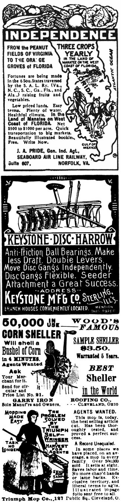

Here are two more pages of old-timey information taken from issues of Successful
Farming, The Farm Journal and The Inland Farmer dated 1898 to 1914.
I have tried several of the so-called early varieties, but find that the best strains of selected Urfurt and Snowball give most satisfactory results. Last season from plants set April 18, I cut fine heads In June, some measuring 27 Inches In circumference. The season was not a favorable one, being very dry, and cauliflower, to do best, requires Plenty of water. These were grown in a small way for home use. It is not a difficult task to water 60 or 100 plants, if they need it.
Cauliflower requires rich Boll, and as mine is not, at present, of that type I have used a mixture of one-third hen manure and two-thirds horse manure and sifted coal ashes, thoroughly composted. I use one shovelful to three hills, before setting the plants. I give good cultivation and, at time of second hoeing, scatter around each plant a tablespoonful of nitrate of soda and hoe it In. Last spring, I set 400 plants. Nearly every one produced a tine head. The quality of the seed used is an Important factor in success. I purchased seed one year at 10 cents per package and it proved the dearest I ever bought. I did not get a decent head from 200 plants. Right beside that plot I set some plants grown from seed that cost me 25 cents per package for 100 seeds. Every plant produced a fine head. Set out only strong, vigorous plants.
Under the right conditions geese give better returns than any other poultry. By nature geese are more like a sheep or cow in habit of feeding than like poultry. They are essentially grazing animals and too much grain will spoil them. Pure air Is of even more Importance to geese than to cattle. They will not thrive if shut up in buildings. If you have not a good pasture, do not try to keep geese, or at least to raise many goslings. They Can, however, he kept in yards, if fed an abundance of fodder corn, green rape, clover or other green feed, but this adds greatly to the expense.
While green pasture is important for maintaining old geese, it is indispensable food for young goslings. I They must have fresh, tender grass In abundance at all times during the day, from the first day they eat to the time they are well feathered and have grown their wings. After that, those intended for market may be penned and fed green stuff and grain, but those intended for breeding should continue to have pasture and free range. If a large flock is raised, quite a. pasture is needed to sustain them. It takes geese almost as long to reach full development as it does cattle or sheep, but they remain profitable for many years. Yearling geese are very poor breeders, two-year-olds are better, and they only reach their best at three years of age.
If one wishes to make a start in keeping geese, the best plan is to buy breeding stock early in the fall. They must not only become accustomed to their new quarters, but to each other, for geese do not mate readily and if put together after January I will often fall to breed that year. Old, well-mated geese of the highest quality are the cheapest and most profitable to buy. The best way to get the finest geese is to buy young ones, and to order them before they are hatched. Have the large early hatched specimens selected for you and delivered early in the fall. They must be kept at least one year without profit and two years before they will do their best, but in this way one knows the age of his stock, and in the end will get better results.
The 'Blue Andalusians hatch as true to color as the Rhode Island Reds. For meat they would not equal them, but for eggs I know of no breed superior. A very Important point with me is their agreeable disposition. They are as tame as any hen I ever saw. Their eggs are very large, weighing seldom less than 24 and often 30 ounces per dozen. Their bad qualities are they will not hatch over 80% true to color and have blue legs, but in my opinion the hen that will lay is the hen that pays, and in my case the Andalusians fill the bill. In size they are larger than the Leghorns and have very large, heavily meated breasts like the Langshans.-[M. O. Soule, Cumberland County, Me.
To Thaw Frozen Eggs -Quite by accident we discovered a method of thawing frozen eggs. Wrap them In several thicknesses of cloth loosely wrung out of cold, water, or entirely surround them with thoroughly wet straw. If cloth or straw dries too rapidly, sprinkle with cold water. The covering will absorb the frost from the eggs and leave them in such condition that when broken they cannot be told from an unfrozen egg. Those who have tried thawing eggs In cold water only and find the yolks hard and much water in shell will welcome this. Let the thawing process be slow and thorough and you will find you can whip the whites of the eggs if desired.[Mary E. Lee.
Omelets are generally considered more difficult to make than other egg dishes. But this need not prevent anyone from attempting them. If the first principles are carefully observed a little perseverence, will soon result in success.
A perfectly smooth pan is of first importance; to give extra smoothness scour before using with dry salt. Everything must be ready before beginning to cook an omelet-the platter heated, the garnishings, fillings or sauces near at hand. Make several small omelets rather than one large one, as they are more easily managed. To Insure thickness, also an important requisite, use a small pan. Serve without delay.
Plain or Puffy Omelet: Beat the yolks of 4 eggs until very light, add 4 tablespoons hot water (hot water makes a more tender omelet than milk), 1/2 level teaspoon salt and a dash of pepper; then pour into the stiffly beaten whites of eggs and combine carefully. Turn the mixture into a hot buttered omelet pan, spread evenly and remove to a cooler part of the stove. Cook slowly until slightly brown underneath. Occasionally turn the pan to brown evenly and slip a knife under to keep the center from burning, then place on the top grate in the oven to finish cooking. When a knife thrust into the center comes out nearly dry fold, turn onto EL hot plate, garnish and serve immediately.
To Fold and Turn an Omelet: Cut small Incisions opposite each other and at right angles to the handle. Run a knife around the edge to loosen it, then place the knife under the half nearest the handle, tip the pan to nearly a vertical position and carefully manipulate so as to fold over without breaking. Place a hot dish over the pan and gently Invert together so the omelet will fall into the right place.
French Omelet: Break 4 eggs into a bowl, add 1/2 level teaspoon salt, a few grains pepper, 4 tablespoons water, and beat only until well blended.
Put 1 tablespoon butter into an omelet pan, and when hot pour in the omelet. Shake the pan to make the omelet light, and as it cooks lift the sides o the omelet with a knife, letting the uncooked part run under. When all is of a creamy consistency, let it rest for a few seconds to slightly brown underneath, then fold and turn onto a hot dish.
The many varieties of omelets are simply modifications of these two rules. A little chopped parsley, a few drops of onion juice, or a tablespoon grated cheese: a heaping tablespoon chopped ham, chicken or veal;, shredded fish, parboiled oysters or finely chopped cooked clams may be added to the body of the omelet before cooking, or spread on the surface before folding, the added ingredient giving to the omelet its name. Sometimes the article is mixed with a sauce and poured around the omelet, as ham in tomato sauce, chicken in cream or mushroom sauce, oysters in oyster sauce, and so on. Garnish with parsley, pickles, slices of lemon or toast points.
Vegetable Omelets are appropriately served as an entree. Peas, asparagus tips, corn, mushrooms, tomatoes, cauliflower, etc, cooked and seasoned ready for serving, may be poured about the omelet, with a small portion spread over the surface before folding.
Sweet Omelets are made with Powdered sugar instead of salt and pepper, allowing I level tablespoon to an egg. Cook as plain omelet, spread before folding with jam, jelly or marmalade, and sprinkle with sugar. Serve as a dessert.
Fruit Omelets are spread before folding with fruit slightly warmed and sweetened, and the remainder is poured about it. Fruit juice may take the place of water in making these omelets.
Shrimp Salad- Chop half a cabbage and I onion, add, if well bleached, 3 heads celery, which has been cut by the shears; then, Just before serving mix gently with this cucumber pickles, which have been cut into cubes. On each salad plate place a spoonful of this mixture, a large cube of red beet pickle, a slice of the yolk of a hard-boiled egg, a spoonful of shrimp, a sprig of parsley and celery, and a spoonful of French peas.-[Blanche Hughes.
Many persons find they are out of shoe polish when most needed. But if you happen to have an orange or banana, your difficulty is quickly solved. The best dressing for black leather to orange juice. Take a slice or a quarter of an orange, and rub it thoroughly all over the shoe or boot to be cleaned, and allow it to dry, then brush briskly with a soft brush until it shines like a looking glass.
A most convenient dressing for tan shoes is the inside of a banana skin. This is rubbed well and evenly all over the shoe, and removes all spots and dirt as well as gives a fine polish, which last is brought out by using a flannel cloth for wiping dry and another clean flannel for polishing. A slice of lemon is also used if the tan shoe is very much discolored.
Patent leather must never be blacked or polished with anything but an oil. A little apple juice added to sweet oil or vaseline is the best. It is necessary to clean them from all dirt with a wet sponge before applying the oil and apple juice. If a polish Is desired, use a chamois or old kid glove to bring out the luster.
With all the year's crops made and all harvested, we come to a season of rest and enjoyment-the season of the Harvest Horne with its various charms and pleasures. It is a time life upon the farm takes on an added charm-a time when the farm home is, or should be, a place known for good cheer, plenty and solid comfort.
It is also a time to consider ways and means for improvements and for adding to the equipment of the farm home no less to the farm those things which the crop money will enable the family to afford in the way of conveniences and for beautifying the home and its surroundings. Crops have made, good crops throughout the South, and prices are in the main satisfactory. In laying out the year's proceeds do not overlook or fail to provide for the household needs-those things which will do so much to make the home folks contented and happy, which will especially please wife and daughter, and cause the boys to want to stay at home.
|
|
 |
|